Gopher It: Office Intern Simulator
Une simulation de bureau cosy à la première personne, dans la peau du tout nouveau stagiaire. Personne ne vous apporte de travail : quand un collègue vous appelle, vous allez le voir, il vous dit ce qu’il lui faut, et vous vous en chargez. Seul ou avec jusqu’à trois amis.
- Démo gratuite disponible
- Sortie le 9 novembre 2026
- Windows (Steam)
- 1 à 4 joueurs
- 7,79 €
- Entièrement en français
Fiche technique
- Développeur et éditeur
- Lys Games
- Dates de sortie
- Démo gratuite : disponible (sortie le 27 octobre 2026)
Jeu complet : lundi 9 novembre 2026 à 19 h (heure de Paris) - Plateforme
- Windows, sur Steam
- Prix
- 7,79 €, avec 25 % de réduction la semaine de la sortie
- Joueurs
- 1 à 4. Coop en ligne avec vos amis Steam ou sur invitation. En solo, c’est le même jeu, hébergé pour une seule personne.
- Langues
- Interface et textes en français, anglais, allemand, espagnol (Espagne), italien, polonais, portugais (Brésil), turc, russe, ukrainien, japonais, coréen, chinois simplifié, chinois traditionnel, vietnamien, indonésien et thaï. Pas de doublage.
- Moteur
- Godot 4
- Fonctionnalités Steam
- Succès, prise en charge complète des manettes, partage familial
- Accessibilité
- Aucune action chronométrée, on avance à son rythme, options de confort pour la caméra, volumes réglables séparément
- Liens
-
- Page Steam
- Bande-annonce sur YouTube
- X : @lysgamedev
- Bluesky : @lysgames.bsky.social
- YouTube : @lysgamedev
- TikTok : @lysgamedev
Présentation
Version courte
Gopher It est une simulation de bureau cosy à la première personne, dans la peau du tout nouveau stagiaire. Quand un collègue vous appelle, vous allez faire ce qu’il demande : des photocopies, un café, le courrier, une carte d’anniversaire à faire signer par tout le monde. En solo ou avec jusqu’à trois amis. Pas de chrono, pas de game over.
Version longue
Vous êtes le nouveau stagiaire, et il se trouve que vous êtes un gopher. Personne ne vous apporte de travail. Quelqu’un vous fait signe à deux bureaux de là, ou vous appelle derrière une porte, et vous allez voir ce qu’il lui faut. Ensuite, vous vous en occupez.
Marcel le renard a besoin de quatre jeux de copies assemblés. Beatrice l’alpaga veut une boisson et vous expliquera exactement comment elle la prend. Pixel le shiba a besoin qu’on déplace un objet plus lourd que lui. Les tâches sont petites et concrètes. À la photocopieuse, vous chargez le papier, réglez le nombre de copies, dégagez le bourrage, agrafez les jeux et les rapportez. Pour une boisson, vous posez la tasse, appuyez sur le bon bouton, ajoutez le sucre demandé, puis traversez l’étage sans rien renverser.
L’horloge n’avance que quand vous terminez une tâche, donc vous ne prenez jamais de retard. Si vous renversez ce café, vous allez chercher la serpillière. Les tâches rapportent des points de stagiaire, et ces points débloquent des choses : la corvée de toner, votre propre bureau, un plateau à boissons, un badge pour les archives du huitième étage et, un jour, une promotion.
Entre amis, c’est le même bureau. La liste du jour s’allonge avec le nombre de joueurs, chaque tâche terminée fait avancer l’horloge pour tout le monde, et ce que vous ne pouvez pas finir peut être laissé sur le bureau libre pour qu’un autre le reprenne. Certaines tâches, comme la caisse trop lourde, n’apparaissent que si vous êtes au moins deux.
La démo gratuite couvre vos trois premiers jours de stage, en solo ou en coop. Votre sauvegarde est conservée dans le jeu complet.
Points forts
- C’est vous qui allez au travailUn signal apparaît au-dessus de la tête d’un collègue, ou une voix appelle depuis une pièce voisine. Vous allez le voir, il vous fait sa demande en personne, et vous partez chercher ce qu’il veut.
- Plus de quarante types de tâchesLa photocopieuse, la tournée des boissons, le courrier de bureau en bureau, un coursier à l’entrée avec une palette que personne n’a commandée, le broyeur, et une carte d’anniversaire que tout le monde doit signer avant que l’intéressé ne s’en aperçoive.
- Pas de chrono, pas de game overLe temps ne passe que quand une tâche est terminée. Une erreur se transforme en petite tâche, comme éponger une flaque, ou coûte quelques points sur le fax de fin de journée.
- 27 déblocagesLes points de stagiaire ouvrent de nouvelles pièces, de nouveaux outils, de nouveaux types de tâches, et des collègues qui ne vous demandaient rien jusque-là, jusqu’à la fin de votre stage.
- Coop jusqu’à quatreVos amis vous rejoignent via Steam. La liste des tâches s’adapte au groupe, et le bureau libre permet de passer la main sur une tâche que vous ne pouvez pas finir.
- Tout un bureau à rencontrerNeuf collègues vous confient des tâches : Marcel, Beatrice et Pixel dès le premier jour, puis six autres au fil du jeu, sans oublier Colette à l’accueil et Gus le coursier.
- Deux étages à découvrirLe septième étage regroupe le hall, l’open space, la reprographie, la salle de pause, la salle de réunion, la réserve et d’autres pièces. Les archives, à l’étage du dessus, demandent un badge, et l’ascenseur a sa propre musique.
- Jouable à la manettePrise en charge complète des manettes et 41 succès Steam.
Bande-annonce
Bande-annonce de Gopher It, 32 secondes. Télécharger le MP4 en 1080p, ou la regarder et l’intégrer depuis YouTube.
Captures d’écran
Les six captures de la page Steam, en 1920 × 1080. Cliquez sur une image pour l’ouvrir en taille réelle, puis clic droit (ou appui long) pour l’enregistrer.

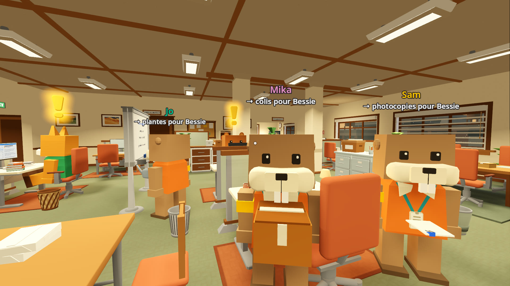

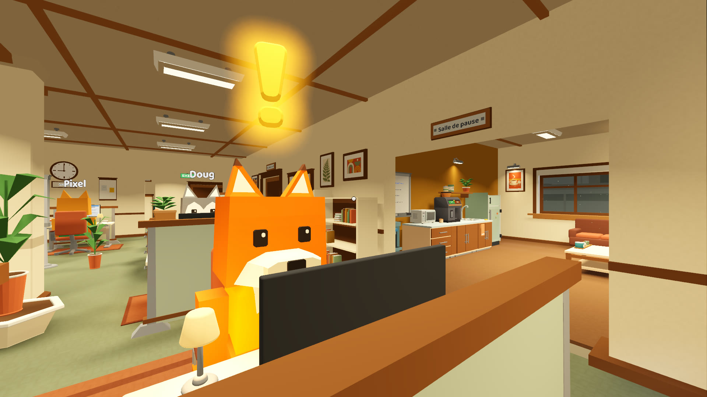

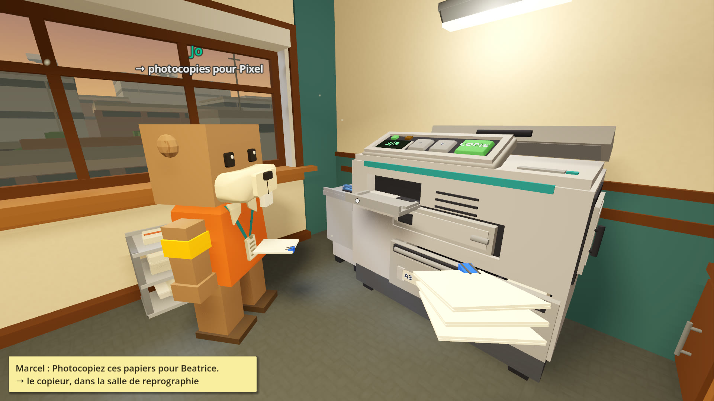

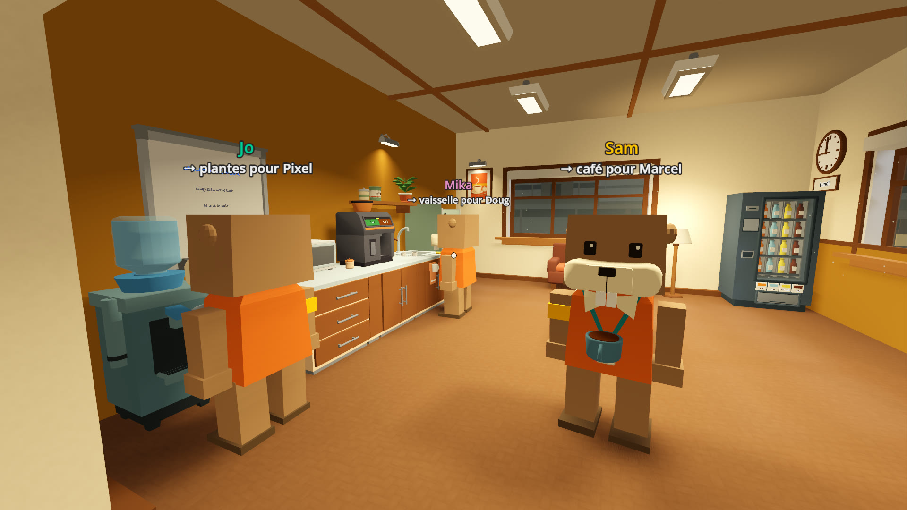

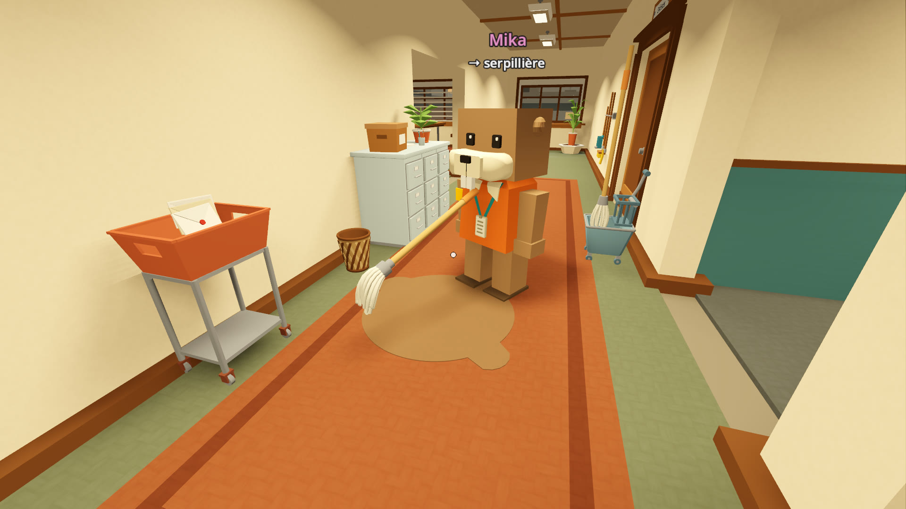

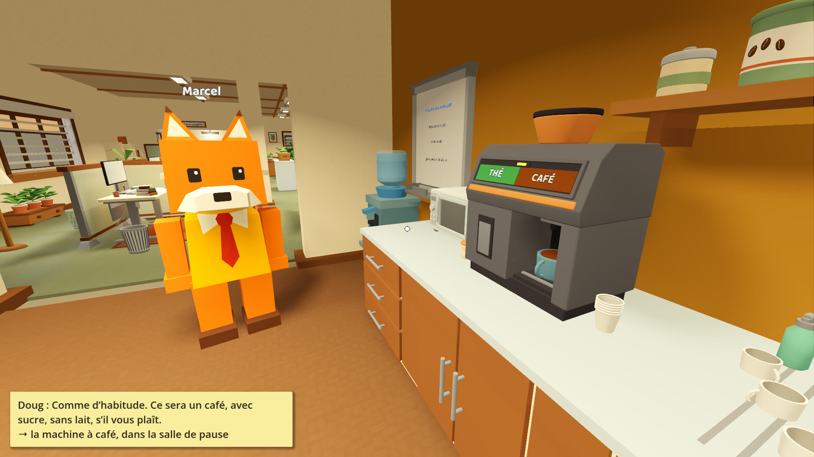
GIF
Courtes boucles de 640 px de large. Clic droit (ou appui long) pour les enregistrer.
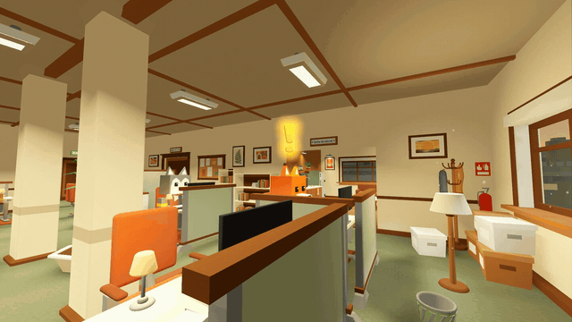
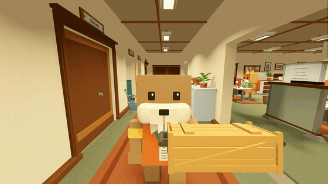
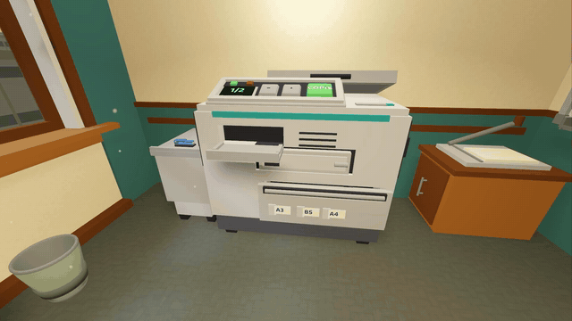
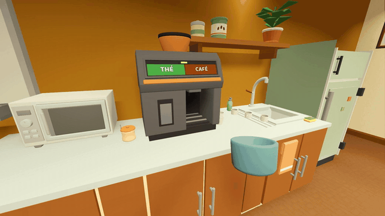
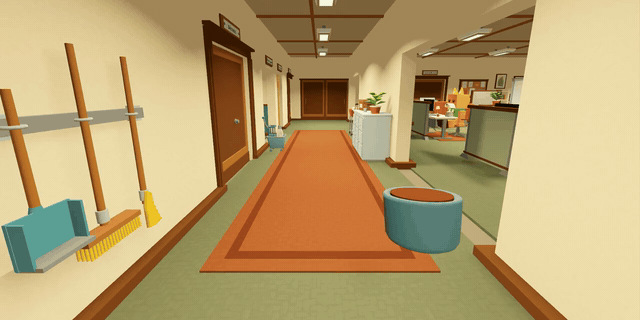
Logos et icône
PNG transparents en pleine résolution. Le premier a un contour brun pour les fonds clairs, le second un contour crème pour les fonds sombres.

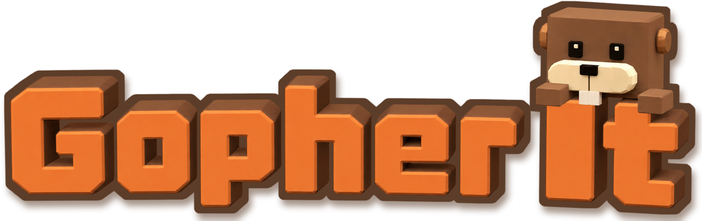

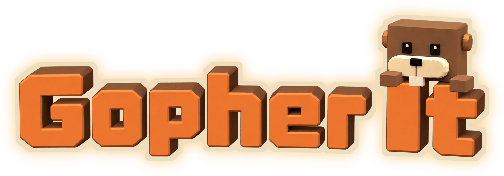

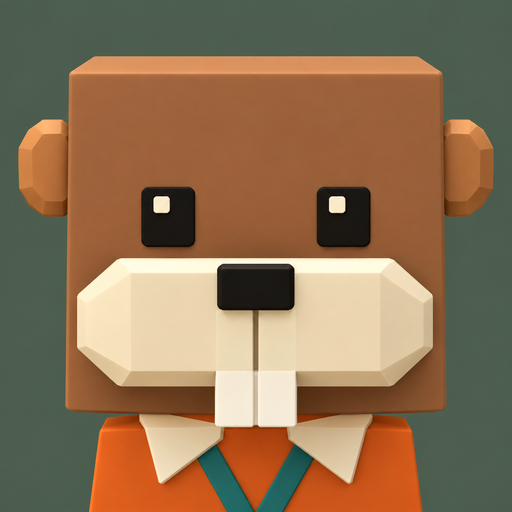
Visuels

Capsules Steam

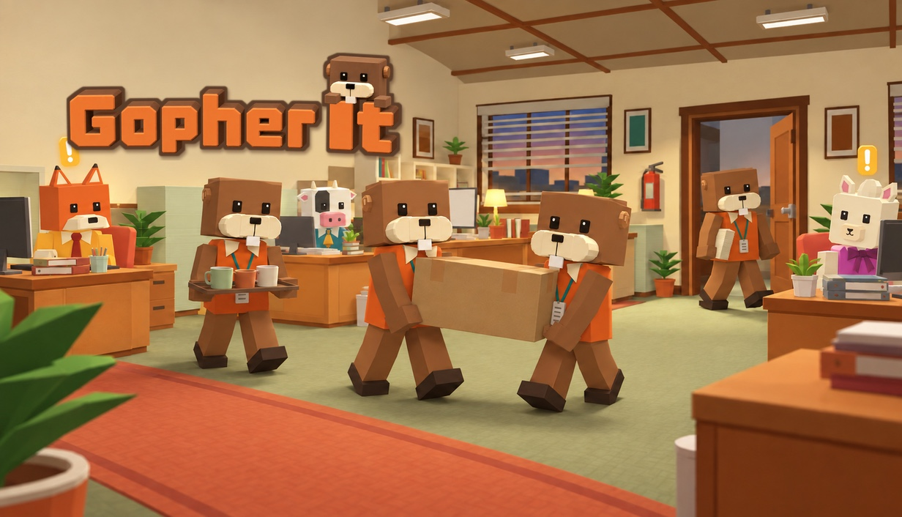

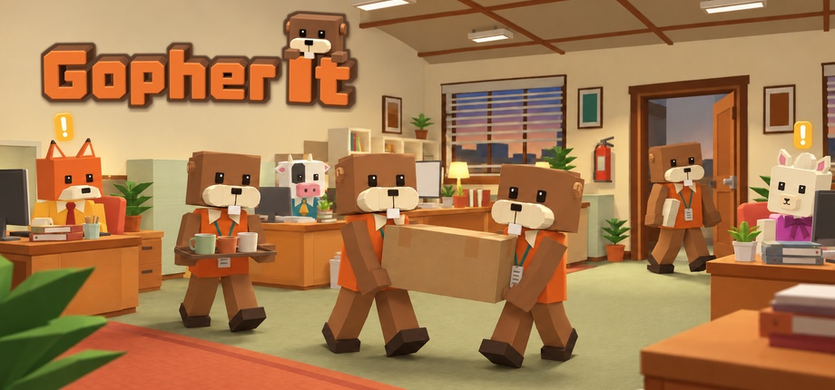

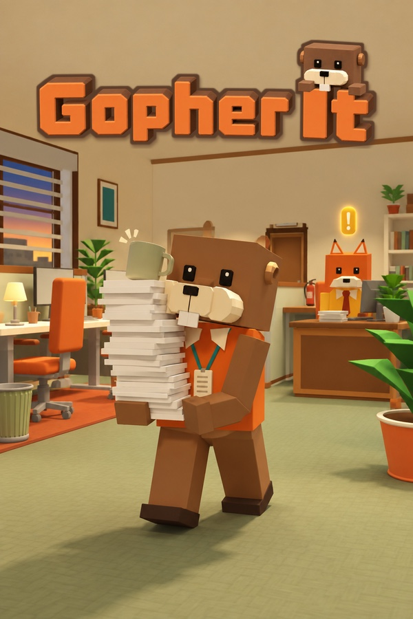
Streamers et vidéastes
Vous pouvez streamer Gopher It et en faire des vidéos, y compris monétisées, sans demander d’autorisation. Un lien vers la page Steam en description est apprécié, mais pas obligatoire.
Des clés sont disponibles sur demande. Écrivez à lysgamedev+media@gmail.com avec un lien vers votre chaîne. Les clés ne sont envoyées qu’à l’adresse e-mail indiquée sur la chaîne : écrivez-nous depuis cette adresse, ou vérifiez qu’elle est bien visible sur votre page.
La démo gratuite est disponible et couvre vos trois premiers jours de stage, vous pouvez donc jouer au début du jeu sans clé.
Utilisation de l’IA
« Une partie des visuels (images de la page Steam, icônes, tableaux et textures dans le jeu) et des traductions a été créée à l’aide d’outils d’IA générative. »
Traduction de la mention publiée sur la page Steam. Le jeu ne génère rien par IA pendant que vous jouez.
Contact
Presse, créateurs ou toute autre demande, en français ou en anglais :
lysgamedev+media@gmail.com
Vous pouvez aussi suivre Lys Games sur X, Bluesky, YouTube et TikTok.